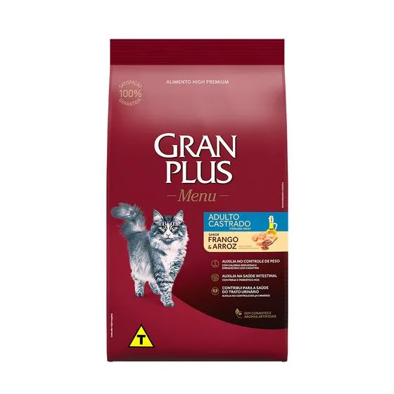

GP Menu Gato Adulto Castrado Sabor Frango e Arroz
R$ 45,00
Ver descrição do produto
Ração GP Menu especialmente formulada para gatos adultos castrados, no sabor frango e arroz, promovendo a nutrição completa e o bem-estar do seu felino.
- Indicação:
- gatos adultos castrados
- Categoria:
- ração
- Animal:
- gatos
- Sabor:
- frango e arroz
- Apresentação:
- ração seca